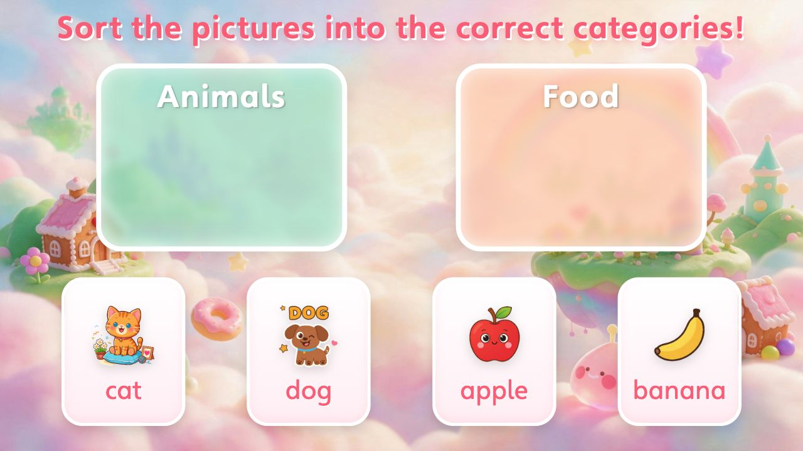

糖果乐园风
教学页的城堡、彩虹、道路和多种糖果同时出现，干扰线段观察。降低教学页背景密度，保留糖果配色和质感。
下载完整修订提示词修改 1
V2.4 原文
采用马卡龙糖果背景和中央奶油甜品题板。画面可以有糖果屋、棒棒糖、软云、甜甜圈、马卡龙、彩虹和果冻质感。整体高明度、甜美、柔软、低龄友好，不能过暗、过灰或变成普通玻璃卡片。
局部修订
教学页采用高明度马卡龙配色和柔软糖果质感。题干、线段、选项和按钮所在的中央区域保持开阔、低纹理、色彩平稳；画面边缘点缀少量糖果或云朵，保留糖果乐园氛围，避免城堡、彩虹、甜点、道路和角色同时密集堆叠。整体甜美、柔软、低龄友好，不变成暗灰或普通玻璃卡片。
修改 2
V2.4 原文
3D粘土哑光糖果乐园背景，马卡龙粉、奶油黄、浅紫、薄荷绿，糖果城堡、棉花糖云、彩虹桥、棒棒糖、马卡龙、甜甜圈和软糖装饰放在边缘，整体甜美柔软。画面中心保持开阔的低纹理糖果世界背景，方便 HTML/CSS/JS 绘制题板。不要生成奶油框、任务板、卡片、按钮、标题、文字、糖果标签、logo、水印或二维码。
局部修订
3D粘土哑光糖果乐园教学页背景，马卡龙粉、奶油黄、浅紫和薄荷绿，柔和光照与简洁色面营造甜美氛围。中央大面积保持平缓、低纹理、低对比，不画彩虹桥、道路或城堡穿过教学区；边缘仅少量点缀符合当前任务的糖果或软云，装饰之间留有呼吸空间，不把多种糖果、建筑、道路和角色密集铺满画面。保留糖果乐园的色彩和材质，让HTML/CSS/JS绘制的题干、线段、选项和按钮清楚突出。不要生成奶油框、任务板、卡片、按钮、标题、文字、糖果标签、logo、水印或二维码。
弹跳萌趣风
封面容器的ID样式持续设置display:flex，页面切换仅移除active类，导致封面未隐藏。改为根据状态显式控制显示，并检查计算样式。
下载完整修订提示词修改 1
V2.4 原文
页面状态：封面只在封面状态显示并接收输入；进入教学时关闭封面容器的显示与命中，不能仅移除类名而被更高优先级的display规则重新显示。教学页使用自己的背景，不复用封面图，不继承封面的标题或开始按钮。重置沿原课件流程恢复正确页面状态；结果页和重置后再次核对封面没有透出。此规则只修显示状态，不修改第2节的封面美术内容。
局部修订
页面状态：封面只在封面状态显示并接收输入。进入教学时，明确将封面容器设为display:none并关闭指针命中；进入封面时再按原流程恢复显示。检查最终计算样式，不得让ID选择器或!important覆盖隐藏规则。若实际结构使用#cover-page和active类，可在现有样式之后使用：
#cover-page:not(.active) { display: none; pointer-events: none; }
#cover-page.active { display: flex; }
以上选择器只在实际ID和状态类匹配时使用；其他结构按实际容器和页面状态实现等价规则。教学页使用自己的背景，不复用封面图，不继承封面的标题或开始按钮。进入、完成与重置后核对：封面关闭时计算样式确为display:none、不可命中，教学页和原交互正常；如果原流程返回封面，再恢复封面显示。此规则只修显示状态，不修改第2节的封面美术内容。弹跳风：本地手工验证
进入后封面容器的计算样式为 display:none，教学页显示。已验证错误分类回弹、四张卡正确分类、完成页及Retry重置；音频尚未测试。
